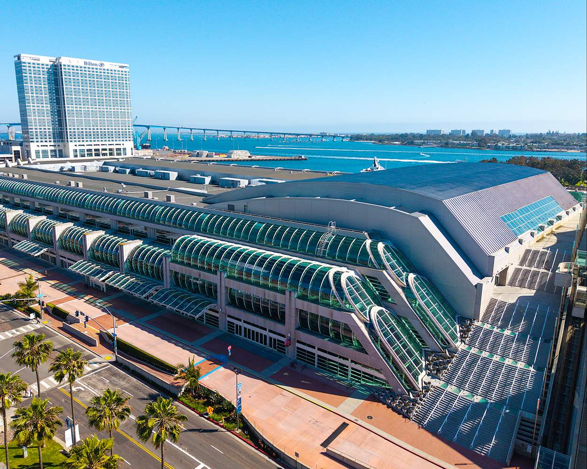
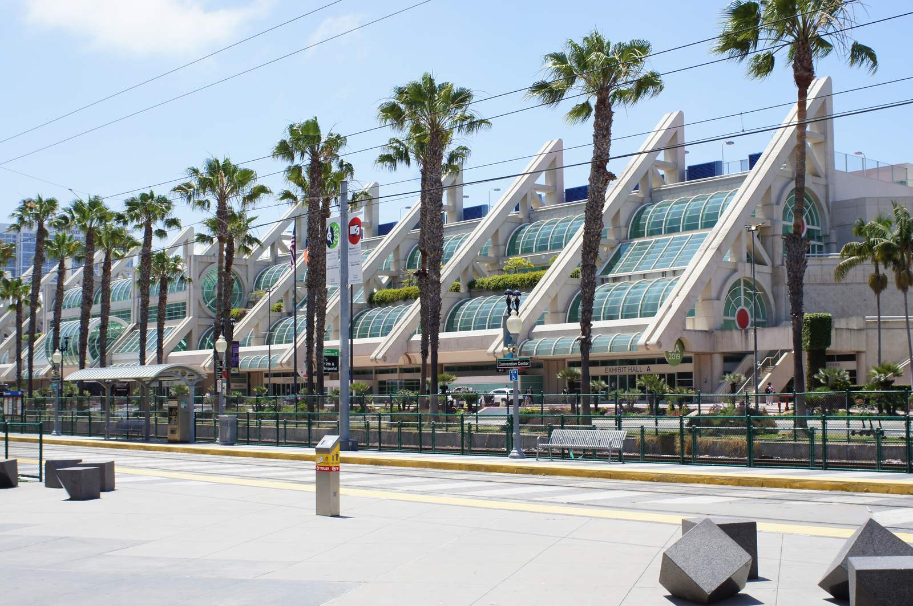

Venue · Convention centre
San Diego Convention Center
- Type
- Convention centre
- Location
- San Diego, United States
- Address
- 111 W Harbor Drive, San Diego, CA 92101
- Capacity
- 20,000 capacity
- Exhibition space
- 48,839 m²
- Halls
- Official exhibit-hall page: 525,701 sq ft of contiguous ground-level exhibit space, divisible into halls A–H (up to seven sections), with eight loading-dock access points
- Official website
- https://www.visitsandiego.com/
About
San Diego’s waterfront convention centre. Official measurements give 525,701 sq ft of contiguous exhibit space (converted to 48,839 m²) for Halls A–H combined. The official seating table gives Halls A–C 20,000 theatre and Halls F–G 12,000 theatre; combined A–H theatre is listed as ‘varies’. Headline capacity_max_delegates is the largest published theatre figure (20,000 for A–C). Atlas events listed only as ‘San Diego (venue to be announced)’ are not linked. Coordinates are a Nominatim result for the named convention centre at the official address.
Spaces
| Name | Type | Capacity | Area |
|---|---|---|---|
| Halls A–H (combined) | — | — | 48,839 m² |
| Halls A–C (combined) | — | 20,000 theatre | 23,164 m² |
| Halls D–H (combined) | — | 12,770 banquet | 25,675 m² |
| Halls F–G (combined) | — | 12,000 theatre | 10,168 m² |
Official documents
Sources
- Official source — https://www.visitsandiego.com/
- Official source — https://www.visitsandiego.com/meeting-planners/space/exhibit-hall
- Official source — https://www.visitsandiego.com/media/acfupload/Exhibit_G_-_Exhibit_and_Meeting_Space_Measurements_copy_1.pdf
- Official source — https://www.visitsandiego.com/meeting-planners/space